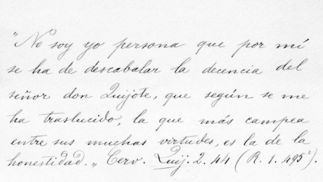

Notas a la «Gramática de la lengua castellana de Andrés Bello». En 1874 Cuervo publica la primera de las catorce ediciones que haría de las Notas a la Gramática de Bello, con lo que la obra del ilustre venezolano ganó no solo la elegancia tipográfica que merecía tan importante obra, sino que ganó la precisión conceptual que le imprimiera la sabia mano del maestro Cuervo. Cejador no vaciló en afirmar que las Notas “valen el doble de la Gramática de Bello, con valer ella tanto”[1]. No todas las 151 notas que conforman el trabajo de Cuervo están orientadas de la misma manera ni persiguen fines semejantes. Ahumada teniendo en cuenta sus características, las agrupa bajo los siguientes epígrafes:1) Defensa de la opinión y el nombre de Bello. 2) Confirmación de los juicios de Bello. 3) Revelación de lo que Bello calla. 4) Ampliación del comentario de Bello con nuevos puntos. 5) Precisiones a Bello. 6) Opiniones contrarias al pensamiento gramatical de Bello. 7) Otras notas.
Nieto Caballero, Agustín. Fundó el Gimnasio Moderno en Bogotá, en 1914, considerada la primera Escuela Nueva en Sudamérica. Su concepción de la escuela era la de un gimnasio para el cuerpo y el espíritu, donde se forjen los hábitos de la vida y el amor al estudio. En Noticias Culturales, nº 102, del 1º de julio de 1969, Agustín Nieto Caballero en su artículo “En casa de don Rufino José Cuervo” (págs. 1-6), rememora algunas apreciaciones en torno a R. J. Cuervo. Entre éstas se destaca la modestia, pues no aparecía en sus cartas ninguna frase jactanciosa ni hacía despliegue de su gran erudición. También precisa que a él y a su hermano Luis Eduardo los motivaba a visitar asiduamente a Cuervo en su casa de París, más que por su prodigiosa biblioteca, por “el amo de la casa, el sabio, el hombre discreto y acogedor”. Se publica aquí el facsímil de la carta de Cuervo a Agustín Nieto Caballero, en la que lo invitaba a participar en un concurso sobre temas de la educación, pues en sus conversaciones el maestro bogotano había advertido la vocación de los hermanos Nieto Caballero por estos aspectos. También se incluyen algunas fotografías de la casa de Cuervo de París y su biblioteca.
Noticia biográfica. Es el prólogo al libro póstumo Cómo se evapora un ejército de Ángel Cuervo en el que Rufino José detalla la vida de su hermano. En la Noticia biográfica, resumió en pocas frases lo que su hermano había significado para él: “Eran de padre los ejemplos y consejos de discreción y prudencia; de madre, la solicitud con que posponía siempre su comodidad a la mía y velaba por mi salud y tranquilidad; de hermano, la generosidad y desinterés absoluto; de amigo, la franqueza y comunidad de sentimientos e ideas, la colaboración y ayuda en todas mis tareas; y de todo esto junto, el interés más vivo por cuanto pudiese acrecentar mi reputación y buen nombre”[2], por estas razones M. G. Romero lo calificó como el ángel de don Rufino.
Novena Conferencia Panamericana. La Novena Conferencia Internacional Panamericana reunida en Bogotá en 1948 acordó “reiterar los anhelos y propósitos expresados en la resolución suscrita en La Habana el 15 de febrero de 1928… sobre auxilio a la edición del Diccionario de construcción y régimen de la lengua castellana compuesto por don Rufino José Cuervo” y, por otra parte, “expresar su voluntad de que la Unión Panamericana, en ejercicio de las amplias facultades que se le concedieron por medio de la referida resolución, proceda a darle cumplimiento en todas sus partes, a fin de que a la mayor brevedad posible pueda el mundo hispano recoger y disfrutar el invaluable patrimonio lingüístico y cultural que representa lo que quedó escrito de aquella monumental obra”. Fruto de esto fue la creación de la Comisión del Diccionario Cuervo en que tuvo asiento Colombia, Chile, Honduras, México, Panamá, Paraguay y Venezuela, comisión que debía ocuparse de todo lo relativo a la publicación del Diccionario de Cuervo, en un plano internacional.
* * *
[1] Anuario, xi, 165.
[2] Cuervo, Obras, 1987, iv, 795.